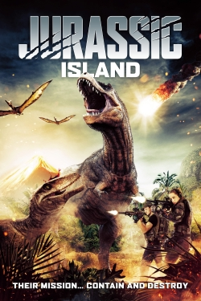

Jurassic Island
Ava reveals the whereabouts of her missing papa to an unchartered Island; a legendary lost world discovered before them by her grandfather. Signed up with by a team of travelers as well as scientists, they come to Jurassic Island where it becomes clear that the previous group had actually encountered calamity. Dinosaurs and poisonous leeches indicate it's no longer a search for her papa, however a fight for survival.
Release Date: 2022-04-05
Genre: Action
Duration: 77 min
Production: N/A
Casts: Sarah T. Cohen, Nicola Wright, Ricardo Freitas, Tony Goodall, Ray Whelan
Scheduled Time: 7pm-9pm
Dates: 2022-04-05 - 2022-04-21
Release Date: 2022-04-05
Genre: Action
Duration: 77 min
Production: N/A
Casts: Sarah T. Cohen, Nicola Wright, Ricardo Freitas, Tony Goodall, Ray Whelan
Scheduled Time: 7pm-9pm
Dates: 2022-04-05 - 2022-04-21